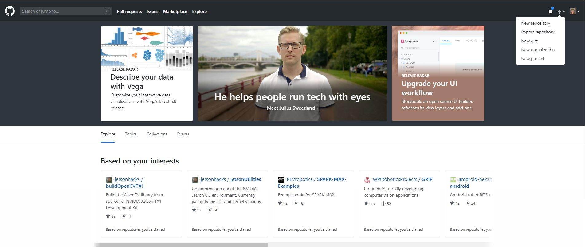
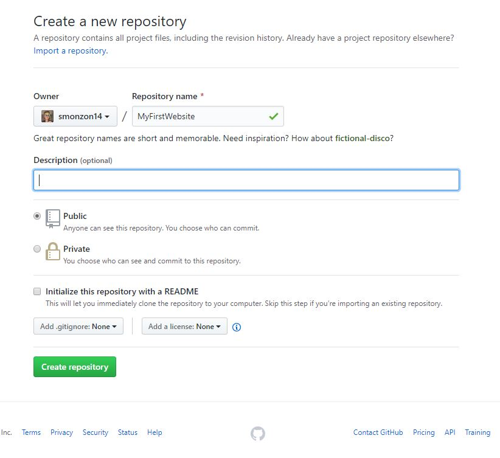
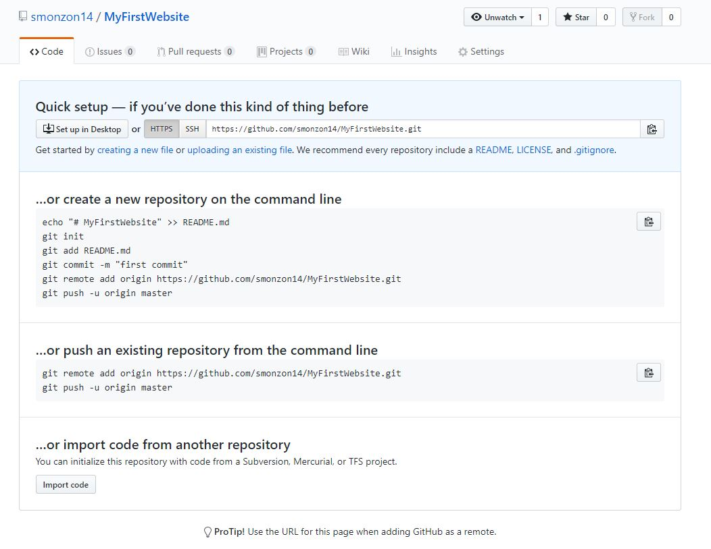
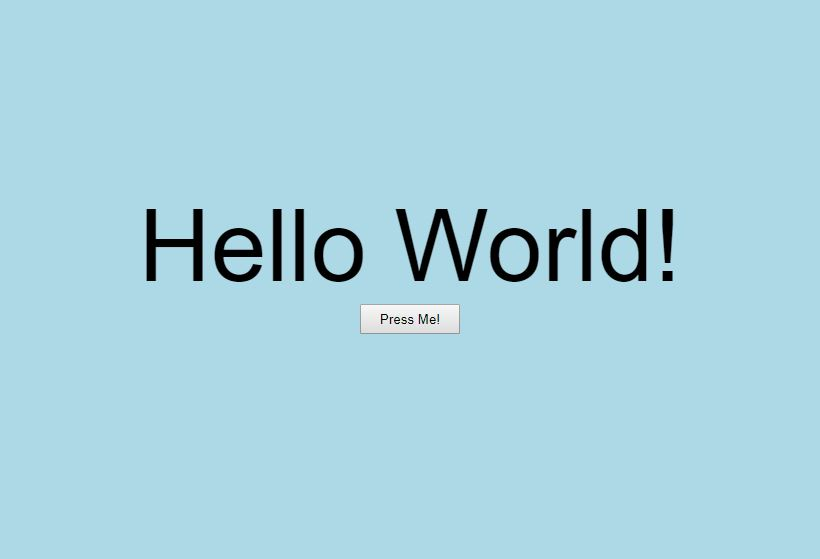
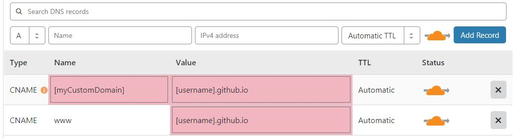
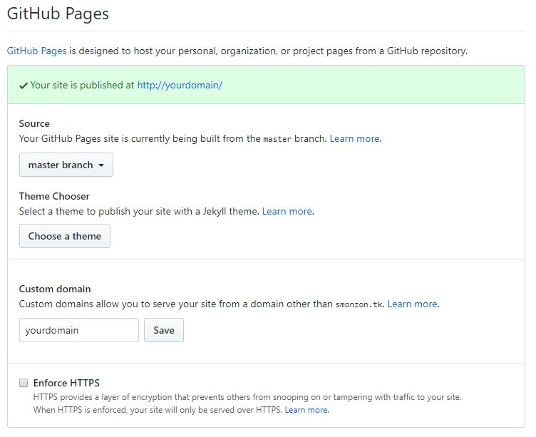

Make A Website
(From scratch)
Getting Started
Making a website is a lot easier than you might expect. For starters, there is some magical place called Github that allows you to upload your code directly to
their servers and make your website live! No need to make a raspberry pi or some other computer serve your website when you can use Github for absolutely FREE. As a matter of fact,
I made this website in it's entirety absolutely free, and so could you! Before we jump into things, you should have:
- A computer
- Text editing software (preferably an IDE of some sort):
- Webstorm
- Notepad++
- (there are plenty of others)
- A Github Account
Git and Github
Git is a very useful tool that allows us to push and pull code onto repositories (projects of code on the Github website). We will be using this
to easily update our website code and instantly have it up and ready on the cloud. To download git, go
here and select your
operating system. Once it is installed, let's go ahead and make a repository on Github.

This is the Github start page, where you will find tons of other code
projects. Github is extremely useful when collaborating with other people and editing or running your code on other systems.
Once you have a Github account, let's go ahead and press the "+" button on the top right corner and click "New Repository".

You can name the repository anything you would like. For this example I
am naming the repository "MyFirstWebsite".
After clicking "Create Repository", we can finally set up our initial commit; which is just a fancy way of saying we are updating our code. The difference between
a commit and a push is that a commit updates your code "locally" and a push sends all of your code to your Github repository, and is now the new version of the code (There are things called branches
which I won't get into for the sake of simplicity).

There are a couple ways to set up your repository
One way to set up the repo is by downloading Github Desktop, which is a more user friendly alternative to using the command line. Let's take the fun route.
If you are on a Mac, search for "Terminal", and for Windows: "Command Prompt". If using a Mac, we can navigate to our Desktop by using the command "cd /Users/[username]/Desktop". If
using a PC with windows, use the command "chdir C:\Users\smonz\Desktop". This is moving our commands to the Desktop, and we will be able to see the repository as soon as the following commands
are executed.
To make a new folder type the following command:
mkdir MyFirstWebsite
Now let's move to our directory...
If on a PC:
chdir MyFirstWebsite
If on a Mac:
cd MyFirstWebsite
Now we can go ahead and copy the code from the "create a new repository on the command line" section (you may be prompted to log in to your Github)
echo "# My First Website" >> README.md
git init
git add README.md
git commit -m "initial commit"
git remote add origin https://github.com/[username]/[repo name].git
git push -u origin master
Adding Files
Now that we've created a repository, we can make a new file called "index.html", which will automatically be the home page for our website. Once you've made that file,
let's put some simple html code inside so we get something on our website:
<!DOCTYPE html>
<html lang="en">
<head>
<meta charset="UTF-8">
<title>Title</title>
</head>
<body>
<div id="someText">Hello World!</div>
<button id="myButton" onclick="alert('Congratulations on your first website!')">Press Me!</button>
<style>
body{
background-color: lightblue;
text-align: center;
}
#someText{
padding-top: 200px;
font-size: 100px;
font-family: Arial, monospace;
}
#myButton{
width: 100px;
height: 30px;
}
</style>
</body>
</html>
Great! now that we have set up our repository and have given it a home page, we can push our changes to Github and make it a live website.
Let's push our code with the following commands:
git add index.html
git commit -m "Added index.html"
git push -u origin master
Setting Up Github Pages
Now that we have some basic html ready for our website, we can go ahead and set up what is called a GitHub Page, which is just an easy way to make web page with a fancy GitHub URL.
On GitHub, go to the "Settings" tab on your repository, and scroll down until you see the section "GitHub Pages". If you did the last step correctly, you should be able to select the option "master branch". Once you do that,
leave the "Custom Domain" blank for now.
Now let's test it out! Github Pages will give you your very own domain name with the format: [username].github.io

If you see something like this, congratulations, your website is live! If not, make sure you chose "master branch" in the
pages section and not something else.
Getting a Domain Name
First, what exactly is a domain name? Say for example, you have a server with access to the internet, and therefore has an IP Address (Internet Protocol Address). Sure, we could type the IP address
into our web browser and it would take us to our website, but who wants to remember a bunch of digits and decimal points when you could have an easy to remember name? This is why we make "domain names", and it makes life
a whole lot easier. In order to get a new domain, we will be using
Freenom, which as the name implies, gives us a free domain for up to a year. We will then use
a free DNS service called
CloudFlare which makes our domain name point to our Github web page.
- Start by making an account by clicking "Sign In".
- Once you have made an account, go to "Services" > "Register a New Domain".
- Now you can type whatever domain name you want the website to have and hope that it is available. If it isn't, try another one.
- In the free section of the domain listings, click "Get it now" on any of the domain endings. Free domains normally have uncommon endings such as ".tk" or ".ml" because of where the servers are located.
- Proceed to the checkout.
- Select the Period dropdown box and select "12 months free", or whatever amount of time you want to have the domain.
- Now select the "Use DNS" button and then "Use your own DNS" for a place to put our Nameservers.
- We want our nameservers to point to Cloudflare, so add these to the nameserver section: (leave IP Address blank)
angela.ns.cloudflare.com
zod.ns.cloudflare.com
- Proceeding to checkout, fill out your information, and "Complete Order".
Setting Up DNS Records
Now we can proceed with setting up our DNS (Domain Name Server) records on CloudFlare which will tell the internet that [username].github.io is at [your custom domain name]. Lets start by
making a CloudFlare account. Once we are signed in, navigate to the "Add Site" button on the top right corner of your website. Copy and paste
the free domain name you chose on FreeNom and paste it into where it asks for your website. Click "Add Site". Hopefully, it brings you to a page that says "Querying Website DNS records" or something of the sort.
Press "Continue" and on the next page, select the free plan and "Confirm Plan". If everything has worked out, it should give you an error saying they were unable to scan your DNS records successfully. This is good
because it means the domain name has not been used.

Notice how there are two "CNAME" records with the same value "[your username].github.io". This is saying that https://[yourdomain].ml and https://www.[yourdomain].ml
both point to your Github web page.
Start by selecting "CNAME" on the dropdown menu where it initially says "A". Type in your custom domain in the "Name" field, then set the "Domain name" field to your GitHub URL. Do this One more time but
instead, set the "Name" field to "www". Now go back to your GitHub repository and set the "Custom domain" setting to whatever your domain is. Click "Save" and if all goes as planned, a green message will pop up in
the pages section of your settings:

You can also mess around with Github website presets with Github's "Theme Chooser". Enforcing HTTPS is also important
if you want to make sure your website traffic is encrypted.